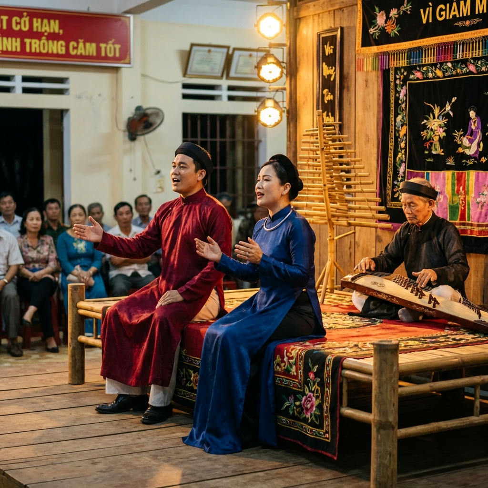

Quê hương anh hùng - Đất võ trời văn
Tìm hiểu về bản sắc văn hóa và con người xứ Nghệ
Dân ca Ví - Giặm là di sản văn hóa phi vật thể đại diện của nhân loại, được UNESCO công nhận năm 2014. Đây là loại hình dân ca đặc trưng của hai tỉnh Nghệ An và Hà Tĩnh, phản ánh sinh hoạt, tâm tư, tình cảm của người dân xứ Nghệ từ bao đời nay.
Giọng Ví đượm nét buồn man mác, sâu lắng, thể hiện nỗi khổ cực của người dân miền Trung trước thiên tai, nghèo khó. Còn giọng Giặm mang âm hưởng vui tươi, phấn khởi hơn, thường được hát trong các dịp lễ hội, mừng mùa màng bội thu.
Ngày nay, dân ca Ví - Giặm vẫn được bảo tồn và phát huy, trở thành biểu tượng văn hóa đặc sắc của vùng đất xứ Nghệ. Nhiều nghệ nhân đã cống hiến cả đời để gìn giữ làn điệu quê hương này cho thế hệ sau.
Nghệ An từ lâu đã nổi tiếng với truyền thống hiếu học. Không chỉ là quê hương của Chủ tịch Hồ Chí Minh, đây còn là mảnh đất sinh ra nhiều danh nhân, trí thức lớn của dân tộc như Nguyễn Du (tác giả Truyện Kiều), Phan Bội Châu, Hồ Xuân Hương...
Tinh thần hiếu học đã thấm sâu vào máu của người Nghệ An. Dù cuộc sống khó khăn, nhưng cha mẹ luôn coi trọng việc học hành của con cái. Câu nói "Con nhà tôi dầu chẳng khá, phải gửi con đến thầy cho khá" là minh chứng cho truyền thống này.
Đến nay, Nghệ An vẫn là một trong những địa phương có số lượng sinh viên đỗ đại học cao nhất cả nước. Nhiều thế hệ học sinh Nghệ An đã thành công trong học tập và trở thành những người có ích cho xã hội.
Con người Nghệ An nổi tiếng với tính cách cần cù, chịu khó, gan dạ và nghĩa tình. Vùng đất này thường xuyên gánh chịu thiên tai nên đã rèn luyện cho người dân ý chí vượt khó vươn lên, không ngại gian khổ.
Người Nghệ An có tiếng là gan dạ, ngay thẳng, không nói láo, mạnh dạn đấu tranh cho chân lý và công lý. Lịch sử Nghệ An ghi nhận nhiều cuộc khởi nghĩa chống giặc ngoại xâm và phong kiến áp bức.
Bên cạnh đó, người Nghệ An còn rất tình nghĩa. Dù đi xa, họ luôn nhớ về quê hương, giúp đỡ đồng hương khi gặp khó khăn. Câu ca dao "Dù ai đi ngược về xuôi, Nhớ ngày giỗ Tổ mùng mười tháng ba" thể hiện lòng biết ơn với tổ tiên, quê hương của người Nghệ An.
Người Nghệ An tuy nghèo về vật chất nhưng giàu về tinh thần. Họ luôn lạc quan, yêu đời, biết ơn và cố gắng vươn lên trong cuộc sống.